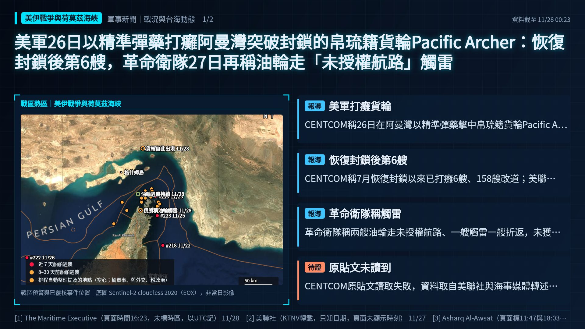

美軍26日以精準彈藥打癱阿曼灣突破封鎖的帛琉籍貨輪Pacific Archer：恢復封鎖後第6艘，革命衛隊27日再稱油輪走「未授權航路」觸雷


報導新進展｜美軍機擊中Pacific Archer船尾、推進系統失效
美軍中央司令部（CENTCOM）27日宣布，26日在阿曼灣使一艘試圖突破美軍對伊朗港口封鎖的商船失去動力。據《海事執行者》與美聯社，該船為帛琉籍散裝貨輪Pacific Archer，《海事執行者》稱為中國船東、2001年造、載重約5.2萬噸。CENTCOM稱該船自阿巴斯港出發後無視多次警告，一架美軍機發射「精準彈藥」擊中船尾，推進系統失效，船上平民船員未受傷；船舶追蹤網站顯示目的地為新加坡。CENTCOM稱這是7月恢復封鎖以來第6艘遭打癱的船，另有158艘遵令改道；美聯社統計自春季封鎖開始以來至少已有15艘公開遭打癱，前一次在11月7日。
報導伊朗說法｜革命衛隊稱一艘油輪觸雷、另一艘折返
據《中東報》，伊朗革命衛隊27日稱，兩艘油輪試圖經「未經授權」航路通過荷莫茲海峽，其中一艘觸雷、另一艘折返，並稱近日未經授權通行的油輪已大幅減少；該報表示無法獨立核實，文中也沒有UKMTO、船東或CENTCOM的證實，船名、船籍與傷亡均未公布。革命衛隊航太軍司令穆薩維另在X發文，稱敵人應預期伊朗在空中與海上的行動，突破封鎖是「堅定任務」。《海事執行者》另引伊朗陸軍海軍司令沙赫蘭·伊拉尼稱伊朗突擊隊奪回兩艘被美方扣押的船，該報認為說法缺乏說服力。
研判研判｜美伊各自用武力管制同一條航道
值得注意的是，美方與伊朗現在各自宣稱對荷莫茲以東、以西的商船有通行管制權：美方在阿曼灣以空中打擊打癱出港船隻，伊朗則宣稱未經其許可的油輪會觸雷。兩邊說法若都成立，商船可能同時面對兩道管制。不過《海事執行者》引海事情報公司Windward稱，受制裁成品油輪Voyager Haven可能已突破封鎖駛往吉布地，代表封鎖並非完全無漏洞。Rystad Energy估計11月前兩週波灣石油流量約每日1300萬桶，較10月少約20%。官方數據比對：本站UKMTO紀錄近7天灣區船舶遇襲8件，低於60日P95的12件，最新一筆是25日波斯灣南部；USNI 11月23日週報顯示阿拉伯海有2艘美軍航艦，達本站門檻。Pacific Archer屬美軍執行封鎖，不在UKMTO遇襲統計內。
待證限制｜CENTCOM原貼文未能讀取、觸雷說法未證實
CENTCOM在X的原始貼文本輪以閱讀工具讀取失敗（HTTP 402），船名、日期與統計數字取自美聯社與《海事執行者》轉述，兩者屬同一份CENTCOM聲明，不算兩個獨立觀測。中國船東身分只見《海事執行者》，美聯社未提。船體受損程度、是否拖帶或登檢，CENTCOM未公布。革命衛隊所稱觸雷事件只有伊方說法，伊朗的Mehr通訊社原文本輪讀取失敗（HTTP 503）。本站不推論事件確切座標。
- [1] The Maritime Executive（頁面時間16:23，未標時區，以UTC記）｜發布 11/28
- [2] 美聯社（KTNV轉載，只知日期，頁面未顯示時刻）｜發布 11/27
- [3] Asharq Al-Awsat（頁面標11:47與18:03兩個時間，未說明時區，以日期記）｜發布 11/27